Overview
Live path
Current page in the last session: S1
Reductions
| id | what | rows | sources made from it | started |
|---|---|---|---|---|
| R1 | ipts37681_ccd_output Re-reduce IPTS-37681 rows into the user-requested ccd/output folder, retaining the existing session settings as the starting point. |
28 rows, 28 done | S0a, S0b | 2026-11-03 |
Sources
| id | what | files | differs from | unit · audit | added |
|---|---|---|---|---|---|
| S0a ← R1 | IPTS-37681 merged CTAB curves merged_CTAB_1,3_0.1shear_Iq.txt, merged_CTAB_1,3_0shear_Iq.txt, merged_CTAB_1,3_0shear-return_Iq.txt, merged_CTAB_1,3_1000shear_Iq.txt, merged_CTAB_1,3_100shear_Iq.txt, merged_CTAB_1,3_10shear_Iq.txt … +8 more |
14 (1d, copy) | first source of this book | unknown 1 info |
2026-11-03 |
| S0b ← R1 | IPTS-37681 8m10a 2D profiles EmptyCupBob_1,3_0shear_8m10a_8m10a_Iqxqy.dat, EmptyCupBob_2,3_0shear_8m10a_8m10a_Iqxqy.dat, CTAB_1,3_0shear_8m10a_8m10a_Iqxqy.dat, CTAB_2,3_0shear_8m10a_8m10a_Iqxqy.dat, CTAB_1,3_0.1shear_8m10a_8m10a_Iqxqy.dat, CTAB_2,3_0.1shear_8m10a_8m10a_Iqxqy.dat … +8 more |
14 (2d, copy) | S0a (computed): configurations 8m10a (vs —) · samples: 14 added, 0 not included | a.u. (relative) 1 warning, 2 info |
2026-11-03 |
S0a reduction record — unknown · 1 info
How these data were reduced is not recorded with them.
- SB-no-record info No eqsanscli/drtsans files were found next to these data; how they were reduced is not recorded.
Absolute scale
| config | scale | source | unit | porsil / NG3 | detail |
|---|
Incoherent / inelastic correction
| config | fit | requested q | used q (drtsans log) |
|---|
Merged profiles
Factors recovered by comparing each merged file with its inputs (eqsanscli does not keep them); overlap as last set in eqsanscli's NOTE.md.
| merged file | unscaled | factors | overlap |
|---|---|---|---|
| merged_CTAB_1,3_0.1shear_Iq.txt | 4m2.5a | 0.024 0.035 | |
| merged_CTAB_1,3_0shear_Iq.txt | 4m2.5a | 0.024 0.035 | |
| merged_CTAB_1,3_0shear-return_Iq.txt | 4m2.5a | 0.024 0.035 | |
| merged_CTAB_1,3_1000shear_Iq.txt | 4m2.5a | 0.024 0.035 | |
| merged_CTAB_1,3_100shear_Iq.txt | 4m2.5a | 0.024 0.035 | |
| merged_CTAB_1,3_10shear_Iq.txt | 4m2.5a | 0.024 0.035 | |
| merged_CTAB_1,3_1shear_Iq.txt | 4m2.5a | 0.024 0.035 | |
| merged_CTAB_2,3_0.1shear_Iq.txt | 4m2.5a | 0.024 0.035 | |
| merged_CTAB_2,3_0shear_Iq.txt | 4m2.5a | 0.024 0.035 | |
| merged_CTAB_2,3_0shear-return_Iq.txt | 4m2.5a | 0.024 0.035 | |
| merged_CTAB_2,3_1000shear_Iq.txt | 4m2.5a | 0.024 0.035 | |
| merged_CTAB_2,3_10shear_Iq.txt | 4m2.5a | 0.024 0.035 | |
| merged_EmptyCupBob_1,3_0shear_Iq.txt | 4m2.5a | 0.024 0.035 | |
| merged_EmptyCupBob_2,3_0shear_Iq.txt | 4m2.5a | 0.024 0.035 |
Rows
| sample | config | scatt | trans | T(λ) | bkg | bkg trans | empty | beam centre (m) | thick (cm) |
|---|
Transmission runs not used by any row
- 188923 T-CTAB 1,3_0shear 4m2.5a
- 188924 T-CTAB 2,3_0shear 4m2.5a
- 188925 T-CTAB 1,3_0shear 8m10a
- 188926 T-CTAB 2,3_0shear 8m10a
drtsans · Mantid · · from /SNS/EQSANS/IPTS-37681/shared/ccd/output
S0b reduction record — a.u. (relative) · 1 warning, 2 info
Data were reduced with drtsans 1.36.0 (Mantid 6.16.1.2) through eqsanscli 0.54.4. 1 configuration (8m10a) and 14 reduced rows. 8m10a: sensitivity Sensitivity_patched_thinPMMA_4m_186200.nxs; mask EQSANS_186104_mask.nxs (built with eqsanscli /mask create); calibration cycle 2026B; no absolute calibration (relative intensity). Intensity unit: a.u. (relative).
- TBL-03 warning eqsanscli /check: 4 row(s): no background
- TBL-05 info Every row has thickness 0.1 cm, eqsanscli's default. Confirm the sample thicknesses.
- SCL-01 info 8m10a: scale 1.0, intensities are relative (a.u.). no standard: relative intensity
Configurations
| parameter | 8m10a |
|---|---|
| flood (sensitivity) | Sensitivity_patched_thinPMMA_4m_186200.nxs |
| mask | EQSANS_186104_mask.nxs |
| default mask | True |
| mask back tubes | False |
| dark current | EQSANS_186198.nxs.h5 |
| beam flux | bl6_flux_2026B_aug_rebinned.txt |
| normalization | Total charge |
| absolute scale | 1 |
| sample offset | 285 |
| detector offset | 66.7142 |
| scale components | [1.004124160407921, 1.0579957381578187, 1.0] |
| TOF cut min | 1000 |
| TOF cut max | 3000 |
| λ step | 0.1 |
| Q binning | linear |
| Q bins | 80 |
| Qx,Qy bins | 80 |
| solid angle corr. | True |
| θ-dependent trans. corr. | True |
| trans. radius (mm) | 25 |
| error weighting | True |
| incoh./inelastic fit | False |
| select min incoh. | True |
| incoh. fit qmin | 0.2 |
| incoh. fit qmax | 0.3 |
| time slicing | False |
| slice interval (s) | 300 |
| log slicing | False |
Absolute scale
| config | scale | source | unit | porsil / NG3 | detail |
|---|---|---|---|---|---|
| 8m10a | 1 | default | a.u. (relative) | no standard: relative intensity |
Incoherent / inelastic correction
| config | fit | requested q | used q (drtsans log) |
|---|---|---|---|
| 8m10a | False | 0.2–0.3 |
Rows
| sample | config | scatt | trans | T(λ) | bkg | bkg trans | empty | beam centre (m) | thick (cm) |
|---|---|---|---|---|---|---|---|---|---|
| CTAB_1,3_0.1shear_8m10a | 8m10a | 188933 | 188925 | 0.511–0.563 | 188910 | 188906 | 188899 | 0.01657, 0.01184 | 0.1 |
| CTAB_1,3_0shear-return_8m10a | 8m10a | 188949 | 188925 | 0.511–0.563 | 188910 | 188906 | 188899 | 0.01657, 0.01184 | 0.1 |
| CTAB_1,3_0shear_8m10a | 8m10a | 188927 | 188925 | 0.511–0.563 | 188910 | 188906 | 188899 | 0.01657, 0.01184 | 0.1 |
| CTAB_1,3_1000shear_8m10a | 8m10a | 188943 | 188925 | 0.511–0.563 | 188910 | 188906 | 188899 | 0.01657, 0.01184 | 0.1 |
| CTAB_1,3_100shear_8m10a | 8m10a | 188942 | 188925 | 0.511–0.563 | 188910 | 188906 | 188899 | 0.01657, 0.01184 | 0.1 |
| CTAB_1,3_10shear_8m10a | 8m10a | 188937 | 188925 | 0.511–0.563 | 188910 | 188906 | 188899 | 0.01657, 0.01184 | 0.1 |
| CTAB_1,3_1shear_8m10a | 8m10a | 188935 | 188925 | 0.511–0.563 | 188910 | 188906 | 188899 | 0.01657, 0.01184 | 0.1 |
| CTAB_2,3_0.1shear_8m10a | 8m10a | 188934 | 188926 | 0.194–0.270 | 188911 | 188907 | 188919 | 0.01752, 0.01291 | 0.1 |
| CTAB_2,3_0shear-return_8m10a | 8m10a | 188950 | 188926 | 0.194–0.270 | 188911 | 188907 | 188919 | 0.01752, 0.01291 | 0.1 |
| CTAB_2,3_0shear_8m10a | 8m10a | 188928 | 188926 | 0.194–0.270 | 188911 | 188907 | 188919 | 0.01752, 0.01291 | 0.1 |
| CTAB_2,3_1000shear_8m10a | 8m10a | 188944 | 188926 | 0.194–0.270 | 188911 | 188907 | 188919 | 0.01752, 0.01291 | 0.1 |
| CTAB_2,3_10shear_8m10a | 8m10a | 188938 | 188926 | 0.194–0.270 | 188911 | 188907 | 188919 | 0.01752, 0.01291 | 0.1 |
| EmptyCupBob_1,3_0shear_8m10a | 8m10a | 188910 | 188906 | 0.596–0.647 | 188899 | 0.01657, 0.01184 | 0.1 | ||
| EmptyCupBob_2,3_0shear_8m10a | 8m10a | 188911 | 188907 | 0.429–0.462 | 188919 | 0.01752, 0.01291 | 0.1 |
Transmission runs not used by any row
- 188923 T-CTAB 1,3_0shear 4m2.5a
- 188924 T-CTAB 2,3_0shear 4m2.5a
drtsans 1.36.0 · Mantid 6.16.1.2 · analysis-node18.sns.gov · from /SNS/EQSANS/IPTS-37681/shared/ccd/output
Decisions
| id | decision | by | date |
|---|---|---|---|
| D1 | Reduce IPTS-37681 data with eqsanscli output directed to /SNS/EQSANS/IPTS-37681/shared/ccd/output. reduction | user | 2026-11-03 |
| D2 | For the 8m 2D order parameter, use all CTAB maps and exclude EmptyCupBob; set φ₀=0° along +qx; include the 0-shear return as a separate point; sum over all q pixels. | user | 2026-11-03 |
| D3 | Plot order parameter versus shear rate with logarithmic x (shear rate) and linear y (S₂); omit zero-shear points from the plot but retain them in the results table. | user | 2026-11-03 |
| D4 | For the merged I(q) files, remove the first 2 data points and the last 5 data points, then update the merged I(q) plot using the trimmed data. | user | 2026-11-03 |
Pages
| id | from | verdict | result |
|---|---|---|---|
| S1 | S0a, S0b | live | Applied the requested trim to all 14 merged I(q) files: each went from 124 to 117 data points after removing the first 2 and last 5. The S1 merged-I(q) overlay now plots the trimmed curves; the updated figure and one trimmed file were checked. |
R1 — ipts37681_ccd_output
reduction · 28 rows, 28 done · in its own eqsanscli session · sources made from it: S0a, S0b
Re-reduce IPTS-37681 rows into the user-requested ccd/output folder, retaining the existing session settings as the starting point.
Reduction table eqsanscli /show table · 28 rows
| Idx | Sample | Config | Scatt | Trans | Thick | Bkg | BkgTr | Empty | Status | Start |
|---|---|---|---|---|---|---|---|---|---|---|
| 1 | EmptyCupBob_1,3_0shear_4m2.5a | 4m2.5a | 188908 S-EmptyCupBob 1,3_0shear 4m2.5a | 188904 T-EmptyCupBob 1,3_0shear 4m2.5a | 0.1 | — | — | 188898 T-empty beam 1,3 4m2.5a | done | 2026-09-21T12:00:34.472283667-04:00 |
| 2 | EmptyCupBob_2,3_0shear_4m2.5a | 4m2.5a | 188909 S-EmptyCupBob 2,3_0shear 4m2.5a | 188905 T-EmptyCupBob 2,3_0shear 4m2.5a | 0.1 | — | — | 188918 T-empty beam 2,3 4m2.5a | done | 2026-09-21T12:36:26.308290667-04:00 |
| 3 | CTAB_1,3_0shear_4m2.5a | 4m2.5a | 188929 S-CTAB 1,3_0shear 4m2.5a | 188923 T-CTAB 1,3_0shear 4m2.5a | 0.1 | 188908 S-EmptyCupBob 1,3_0shear 4m2.5a | 188904 T-EmptyCupBob 1,3_0shear 4m2.5a | 188898 T-empty beam 1,3 4m2.5a | done | 2026-09-21T18:42:32.000096667-04:00 |
| 4 | CTAB_2,3_0shear_4m2.5a | 4m2.5a | 188930 S-CTAB 2,3_0shear 4m2.5a | 188924 T-CTAB 2,3_0shear 4m2.5a | 0.1 | 188909 S-EmptyCupBob 2,3_0shear 4m2.5a | 188905 T-EmptyCupBob 2,3_0shear 4m2.5a | 188918 T-empty beam 2,3 4m2.5a | done | 2026-09-21T18:48:34.025783667-04:00 |
| 5 | CTAB_1,3_0.1shear_4m2.5a | 4m2.5a | 188931 S-CTAB 1,3_0.1shear 4m2.5a | 188923 T-CTAB 1,3_0shear 4m2.5a | 0.1 | 188908 S-EmptyCupBob 1,3_0shear 4m2.5a | 188904 T-EmptyCupBob 1,3_0shear 4m2.5a | 188898 T-empty beam 1,3 4m2.5a | done | 2026-09-21T19:00:31.976722667-04:00 |
| 6 | CTAB_2,3_0.1shear_4m2.5a | 4m2.5a | 188932 S-CTAB 2,3_0.1shear 4m2.5a | 188924 T-CTAB 2,3_0shear 4m2.5a | 0.1 | 188909 S-EmptyCupBob 2,3_0shear 4m2.5a | 188905 T-EmptyCupBob 2,3_0shear 4m2.5a | 188918 T-empty beam 2,3 4m2.5a | done | 2026-09-21T19:06:33.885732667-04:00 |
| 7 | CTAB_1,3_1shear_4m2.5a | 4m2.5a | 188936 S-CTAB 1,3_1shear 4m2.5a | 188923 T-CTAB 1,3_0shear 4m2.5a | 0.1 | 188908 S-EmptyCupBob 1,3_0shear 4m2.5a | 188904 T-EmptyCupBob 1,3_0shear 4m2.5a | 188898 T-empty beam 1,3 4m2.5a | done | 2026-09-21T21:29:16.109892667-04:00 |
| 8 | CTAB_1,3_10shear_4m2.5a | 4m2.5a | 188939 S-CTAB 1,3_10shear 4m2.5a | 188923 T-CTAB 1,3_0shear 4m2.5a | 0.1 | 188908 S-EmptyCupBob 1,3_0shear 4m2.5a | 188904 T-EmptyCupBob 1,3_0shear 4m2.5a | 188898 T-empty beam 1,3 4m2.5a | done | 2026-09-21T23:20:56.601961667-04:00 |
| 9 | CTAB_2,3_10shear_4m2.5a | 4m2.5a | 188940 S-CTAB 2,3_10shear 4m2.5a | 188924 T-CTAB 2,3_0shear 4m2.5a | 0.1 | 188909 S-EmptyCupBob 2,3_0shear 4m2.5a | 188905 T-EmptyCupBob 2,3_0shear 4m2.5a | 188918 T-empty beam 2,3 4m2.5a | done | 2026-09-21T23:26:58.494304667-04:00 |
| 10 | CTAB_1,3_100shear_4m2.5a | 4m2.5a | 188941 S-CTAB 1,3_100shear 4m2.5a | 188923 T-CTAB 1,3_0shear 4m2.5a | 0.1 | 188908 S-EmptyCupBob 1,3_0shear 4m2.5a | 188904 T-EmptyCupBob 1,3_0shear 4m2.5a | 188898 T-empty beam 1,3 4m2.5a | done | 2026-09-21T23:38:55.461839667-04:00 |
| 11 | CTAB_1,3_1000shear_4m2.5a | 4m2.5a | 188945 S-CTAB 1,3_1000shear 4m2.5a | 188923 T-CTAB 1,3_0shear 4m2.5a | 0.1 | 188908 S-EmptyCupBob 1,3_0shear 4m2.5a | 188904 T-EmptyCupBob 1,3_0shear 4m2.5a | 188898 T-empty beam 1,3 4m2.5a | done | 2026-09-22T01:55:00.541154667-04:00 |
| 12 | CTAB_2,3_1000shear_4m2.5a | 4m2.5a | 188946 S-CTAB 2,3_1000shear 4m2.5a | 188924 T-CTAB 2,3_0shear 4m2.5a | 0.1 | 188909 S-EmptyCupBob 2,3_0shear 4m2.5a | 188905 T-EmptyCupBob 2,3_0shear 4m2.5a | 188918 T-empty beam 2,3 4m2.5a | done | 2026-09-22T02:01:02.466833667-04:00 |
| 13 | CTAB_1,3_0shear-return_4m2.5a | 4m2.5a | 188947 S-CTAB 1,3_0shear-return 4m2.5a | 188923 T-CTAB 1,3_0shear 4m2.5a | 0.1 | 188908 S-EmptyCupBob 1,3_0shear 4m2.5a | 188904 T-EmptyCupBob 1,3_0shear 4m2.5a | 188898 T-empty beam 1,3 4m2.5a | done | 2026-09-22T02:12:59.384366667-04:00 |
| 14 | CTAB_2,3_0shear-return_4m2.5a | 4m2.5a | 188948 S-CTAB 2,3_0shear-return 4m2.5a | 188924 T-CTAB 2,3_0shear 4m2.5a | 0.1 | 188909 S-EmptyCupBob 2,3_0shear 4m2.5a | 188905 T-EmptyCupBob 2,3_0shear 4m2.5a | 188918 T-empty beam 2,3 4m2.5a | done | 2026-09-22T02:19:01.260041667-04:00 |
| 15 | EmptyCupBob_1,3_0shear_8m10a | 8m10a | 188910 S-EmptyCupBob 1,3_0shear 8m10a | 188906 T-EmptyCupBob 1,3_0shear 8m10a | 0.1 | — | — | 188899 T-empty beam 1,3 8m8a | done | 2026-09-21T13:06:48.387567667-04:00 |
| 16 | EmptyCupBob_2,3_0shear_8m10a | 8m10a | 188911 S-EmptyCupBob 2,3_0shear 8m10a | 188907 T-EmptyCupBob 2,3_0shear 8m10a | 0.1 | — | — | 188919 T-empty beam 2,3 8m8a | done | 2026-09-21T13:55:48.496169667-04:00 |
| 17 | CTAB_1,3_0shear_8m10a | 8m10a | 188927 S-CTAB 1,3_0shear 8m10a | 188925 T-CTAB 1,3_0shear 8m10a | 0.1 | 188910 S-EmptyCupBob 1,3_0shear 8m10a | 188906 T-EmptyCupBob 1,3_0shear 8m10a | 188899 T-empty beam 1,3 8m8a | done | 2026-09-21T17:01:41.354135667-04:00 |
| 18 | CTAB_2,3_0shear_8m10a | 8m10a | 188928 S-CTAB 2,3_0shear 8m10a | 188926 T-CTAB 2,3_0shear 8m10a | 0.1 | 188911 S-EmptyCupBob 2,3_0shear 8m10a | 188907 T-EmptyCupBob 2,3_0shear 8m10a | 188919 T-empty beam 2,3 8m8a | done | 2026-09-21T17:26:29.793073667-04:00 |
| 19 | CTAB_1,3_0.1shear_8m10a | 8m10a | 188933 S-CTAB 1,3_0.1shear 8m10a | 188925 T-CTAB 1,3_0shear 8m10a | 0.1 | 188910 S-EmptyCupBob 1,3_0shear 8m10a | 188906 T-EmptyCupBob 1,3_0shear 8m10a | 188899 T-empty beam 1,3 8m8a | done | 2026-09-21T19:24:29.878741667-04:00 |
| 20 | CTAB_2,3_0.1shear_8m10a | 8m10a | 188934 S-CTAB 2,3_0.1shear 8m10a | 188926 T-CTAB 2,3_0shear 8m10a | 0.1 | 188911 S-EmptyCupBob 2,3_0shear 8m10a | 188907 T-EmptyCupBob 2,3_0shear 8m10a | 188919 T-empty beam 2,3 8m8a | done | 2026-09-21T19:49:17.750973667-04:00 |
| 21 | CTAB_1,3_1shear_8m10a | 8m10a | 188935 S-CTAB 1,3_1shear 8m10a | 188925 T-CTAB 1,3_0shear 8m10a | 0.1 | 188910 S-EmptyCupBob 1,3_0shear 8m10a | 188906 T-EmptyCupBob 1,3_0shear 8m10a | 188899 T-empty beam 1,3 8m8a | done | 2026-09-21T20:59:28.899755667-04:00 |
| 22 | CTAB_1,3_10shear_8m10a | 8m10a | 188937 S-CTAB 1,3_10shear 8m10a | 188925 T-CTAB 1,3_0shear 8m10a | 0.1 | 188910 S-EmptyCupBob 1,3_0shear 8m10a | 188906 T-EmptyCupBob 1,3_0shear 8m10a | 188899 T-empty beam 1,3 8m8a | done | 2026-09-21T21:40:43.558667667-04:00 |
| 23 | CTAB_2,3_10shear_8m10a | 8m10a | 188938 S-CTAB 2,3_10shear 8m10a | 188926 T-CTAB 2,3_0shear 8m10a | 0.1 | 188911 S-EmptyCupBob 2,3_0shear 8m10a | 188907 T-EmptyCupBob 2,3_0shear 8m10a | 188919 T-empty beam 2,3 8m8a | done | 2026-09-21T22:05:29.930792667-04:00 |
| 24 | CTAB_1,3_100shear_8m10a | 8m10a | 188942 S-CTAB 1,3_100shear 8m10a | 188925 T-CTAB 1,3_0shear 8m10a | 0.1 | 188910 S-EmptyCupBob 1,3_0shear 8m10a | 188906 T-EmptyCupBob 1,3_0shear 8m10a | 188899 T-empty beam 1,3 8m8a | done | 2026-09-21T23:50:16.393485667-04:00 |
| 25 | CTAB_1,3_1000shear_8m10a | 8m10a | 188943 S-CTAB 1,3_1000shear 8m10a | 188925 T-CTAB 1,3_0shear 8m10a | 0.1 | 188910 S-EmptyCupBob 1,3_0shear 8m10a | 188906 T-EmptyCupBob 1,3_0shear 8m10a | 188899 T-empty beam 1,3 8m8a | done | 2026-09-22T00:14:57.948602667-04:00 |
| 26 | CTAB_2,3_1000shear_8m10a | 8m10a | 188944 S-CTAB 2,3_1000shear 8m10a | 188926 T-CTAB 2,3_0shear 8m10a | 0.1 | 188911 S-EmptyCupBob 2,3_0shear 8m10a | 188907 T-EmptyCupBob 2,3_0shear 8m10a | 188919 T-empty beam 2,3 8m8a | done | 2026-09-22T00:39:44.270724667-04:00 |
| 27 | CTAB_1,3_0shear-return_8m10a | 8m10a | 188949 S-CTAB 1,3_0shear-return 8m10a | 188925 T-CTAB 1,3_0shear 8m10a | 0.1 | 188910 S-EmptyCupBob 1,3_0shear 8m10a | 188906 T-EmptyCupBob 1,3_0shear 8m10a | 188899 T-empty beam 1,3 8m8a | done | 2026-09-22T02:36:10.216379667-04:00 |
| 28 | CTAB_2,3_0shear-return_8m10a | 8m10a | 188950 S-CTAB 2,3_0shear-return 8m10a | 188926 T-CTAB 2,3_0shear 8m10a | 0.1 | 188911 S-EmptyCupBob 2,3_0shear 8m10a | 188907 T-EmptyCupBob 2,3_0shear 8m10a | 188919 T-empty beam 2,3 8m8a | done | 2026-09-22T03:00:55.305079667-04:00 |
Grey rows are not reduced. A highlighted Trans is a reduced sample without a transmission.
Configuration parameters
| parameter | 4m2.5a | 8m10a |
|---|---|---|
| Geometry | ||
| sample offset | 285 | 285 |
| detector offset | 66.7142 | 66.7142 |
| Corrections and calibration files | ||
| flood (sensitivity) | Sensitivity_patched_thinPMMA_4m_186200.nxs | Sensitivity_patched_thinPMMA_4m_186200.nxs |
| mask | EQSANS_186104_mask.nxs | EQSANS_186104_mask.nxs |
| default mask | True | True |
| mask back tubes | False | False |
| dark current | EQSANS_186198.nxs.h5 | EQSANS_186198.nxs.h5 |
| beam flux | bl6_flux_2026B_aug_rebinned.txt | bl6_flux_2026B_aug_rebinned.txt |
| normalization | Total charge | Total charge |
| solid angle corr. | True | True |
| θ-dependent trans. corr. | True | True |
| trans. radius (mm) | 25 | 25 |
| Absolute scale | ||
| absolute scale | 1 | 1 |
| scale components | [1.004124160407921, 1.0579957381578187, 1.0] | [1.004124160407921, 1.0579957381578187, 1.0] |
| Wavelength, TOF and binning | ||
| λ step | 0.1 | 0.1 |
| TOF cut min | 1000 | 1000 |
| TOF cut max | 3000 | 3000 |
| Q binning | linear | linear |
| Q bins | 80 | 80 |
| Qx,Qy bins | 80 | 80 |
| error weighting | True | True |
| Incoherent / inelastic correction | ||
| incoh./inelastic fit | False | False |
| select min incoh. | True | True |
| incoh. fit qmin | 0.2 | 0.2 |
| incoh. fit qmax | 0.3 | 0.3 |
| Time slicing | ||
| time slicing | False | False |
| slice interval (s) | 300 | 300 |
| log slicing | False | False |
Highlighted rows: the configurations differ.
Absolute scale
| configuration | scale | from | unit | porsil / NG3 | how |
|---|---|---|---|---|---|
| 4m2.5a | 1 | default | a.u. (relative) | no standard: relative intensity | |
| 8m10a | 1 | default | a.u. (relative) | no standard: relative intensity |
Incoherent / inelastic correction
| configuration | fit | requested q | used q (drtsans) |
|---|---|---|---|
| 4m2.5a | False | 0.2–0.3 | |
| 8m10a | False | 0.2–0.3 |
Merging
Last merge (2026-11-03 18:53, 1 in all): overlap 0.024 0.035, target eqsanscli's default, settings —, samples all → 0 merged files.
| merged file | target | factors | overlap |
|---|---|---|---|
| merged_CTAB_1,3_0.1shear_Iq.txt | 4m2.5a | 0.024 0.035 | |
| merged_CTAB_1,3_0shear_Iq.txt | 4m2.5a | 0.024 0.035 | |
| merged_CTAB_1,3_0shear-return_Iq.txt | 4m2.5a | 0.024 0.035 | |
| merged_CTAB_1,3_1000shear_Iq.txt | 4m2.5a | 0.024 0.035 | |
| merged_CTAB_1,3_100shear_Iq.txt | 4m2.5a | 0.024 0.035 | |
| merged_CTAB_1,3_10shear_Iq.txt | 4m2.5a | 0.024 0.035 | |
| merged_CTAB_1,3_1shear_Iq.txt | 4m2.5a | 0.024 0.035 | |
| merged_CTAB_2,3_0.1shear_Iq.txt | 4m2.5a | 0.024 0.035 | |
| merged_CTAB_2,3_0shear_Iq.txt | 4m2.5a | 0.024 0.035 | |
| merged_CTAB_2,3_0shear-return_Iq.txt | 4m2.5a | 0.024 0.035 | |
| merged_CTAB_2,3_1000shear_Iq.txt | 4m2.5a | 0.024 0.035 | |
| merged_CTAB_2,3_10shear_Iq.txt | 4m2.5a | 0.024 0.035 | |
| merged_EmptyCupBob_1,3_0shear_Iq.txt | 4m2.5a | 0.024 0.035 | |
| merged_EmptyCupBob_2,3_0shear_Iq.txt | 4m2.5a | 0.024 0.035 |
S1 — reduction_summary_merged_profiles
- Question
- Show the eqsanscli reduction table and one overlay plot of all merged profiles.
- Method
- Added S0b as a parent and rendered each 8m10a Iqxqy profile as a log-intensity 2D map; grouped all maps in an HTML gallery with four columns and corrected the colorbar label to a.u.
- Result
- Applied the requested trim to all 14 merged I(q) files: each went from 124 to 117 data points after removing the first 2 and last 5. The S1 merged-I(q) overlay now plots the trimmed curves; the updated figure and one trimmed file were checked.
- Next
- Review the updated merged I(q) overlay in the first section of S1's gallery.
- Decisions
- D1, D2, D3, D4
- From
- S0a, S0b
- Folder
pages/S1_reduction_summary_merged_profiles/· 11 runs · created 2026-11-03 · closed 2026-11-03 · revised 6×
Merged I(q) and 8m10a 2D profiles 15 figures, 4 per row
For each CTAB 8m10a map, the second-order orientational parameter was calculated as S₂ = Σᵢ Iᵢ cos[2(φᵢ − φ₀)] / Σᵢ Iᵢ, where φᵢ = atan2(qyᵢ, qxᵢ) and φ₀ = 0° along +qx. The sums include all finite q pixels; EmptyCupBob maps are excluded. This intensity-weighted measure describes the net twofold orientation relative to +qx. Intensities are relative (a.u.).
Merged I(q) profiles

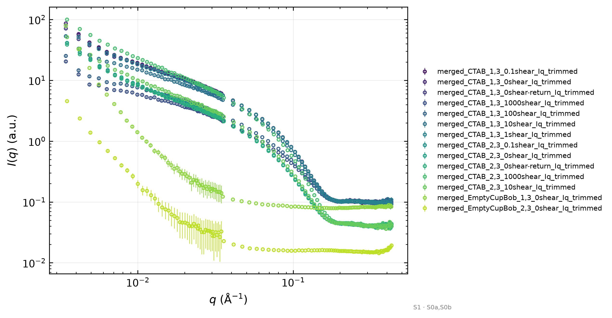
8m10a · I(qx,qy) profiles

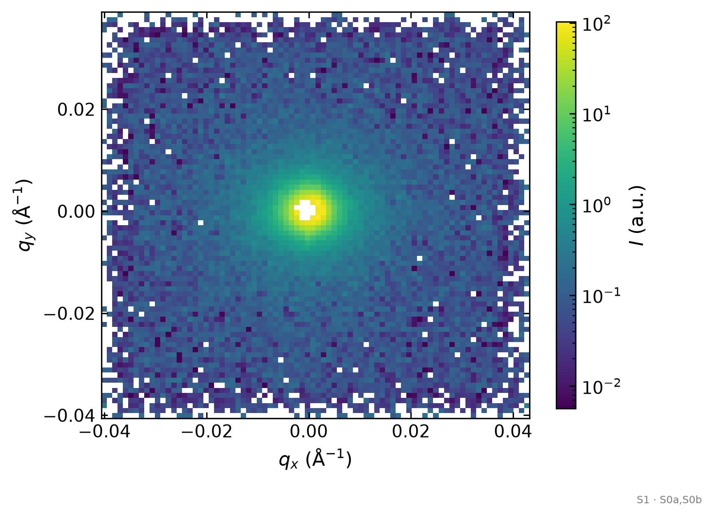

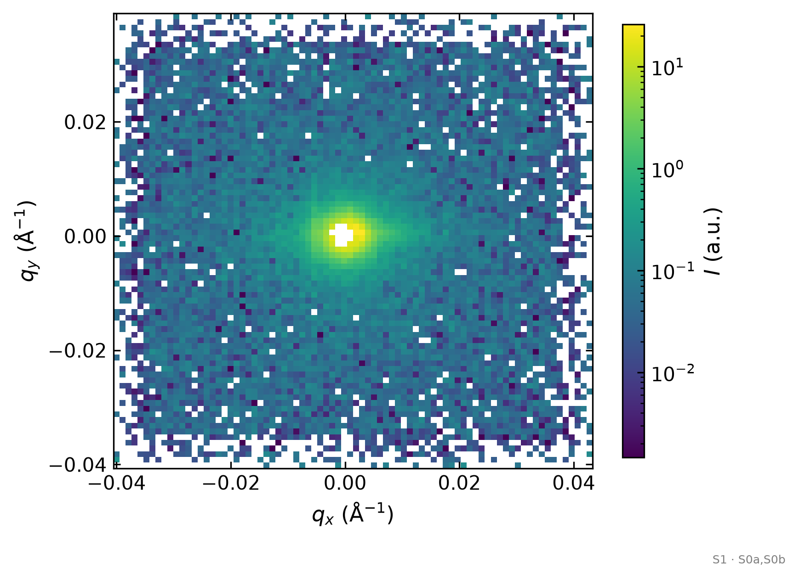


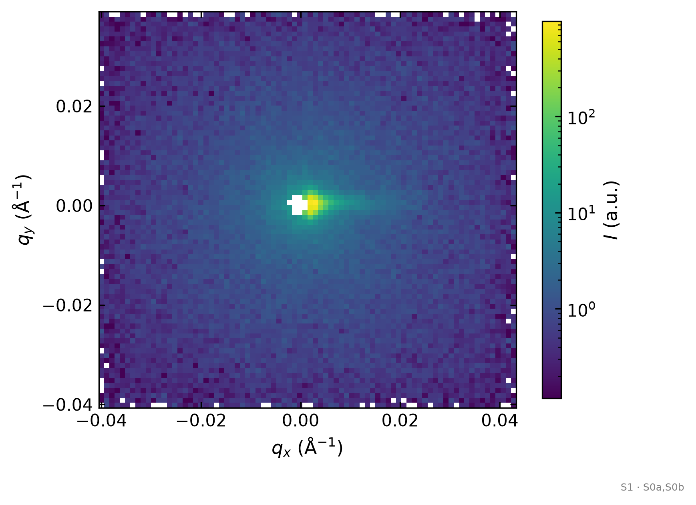

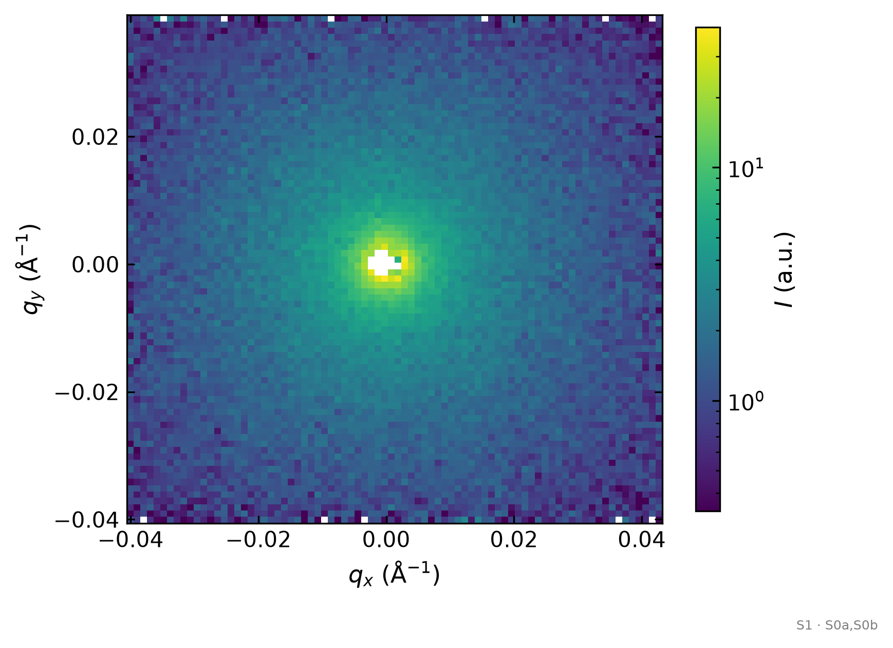

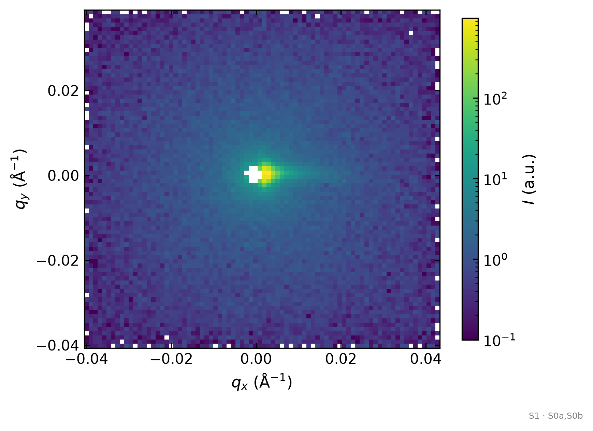

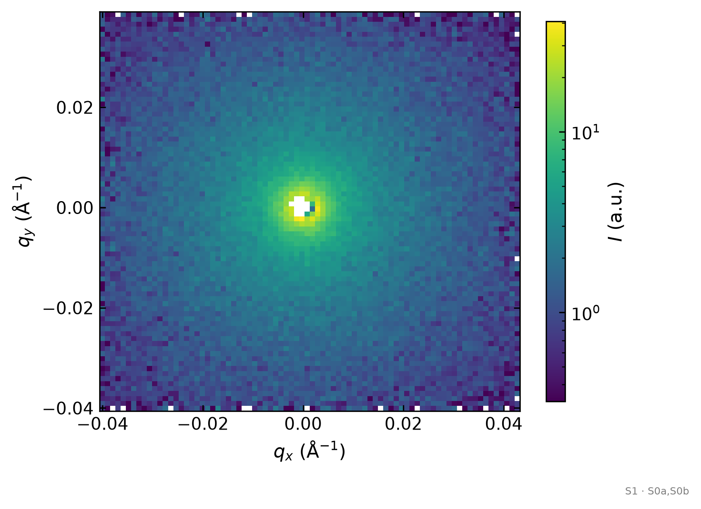

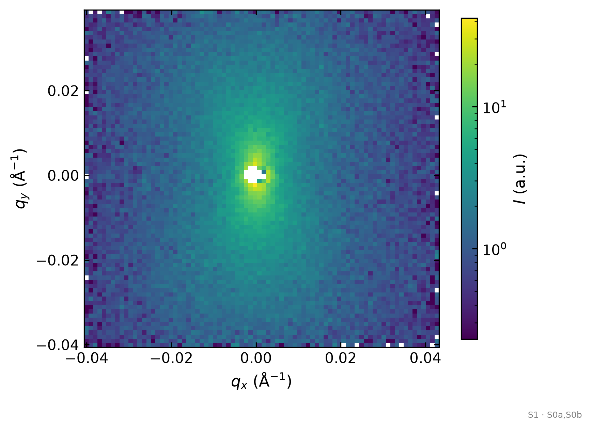

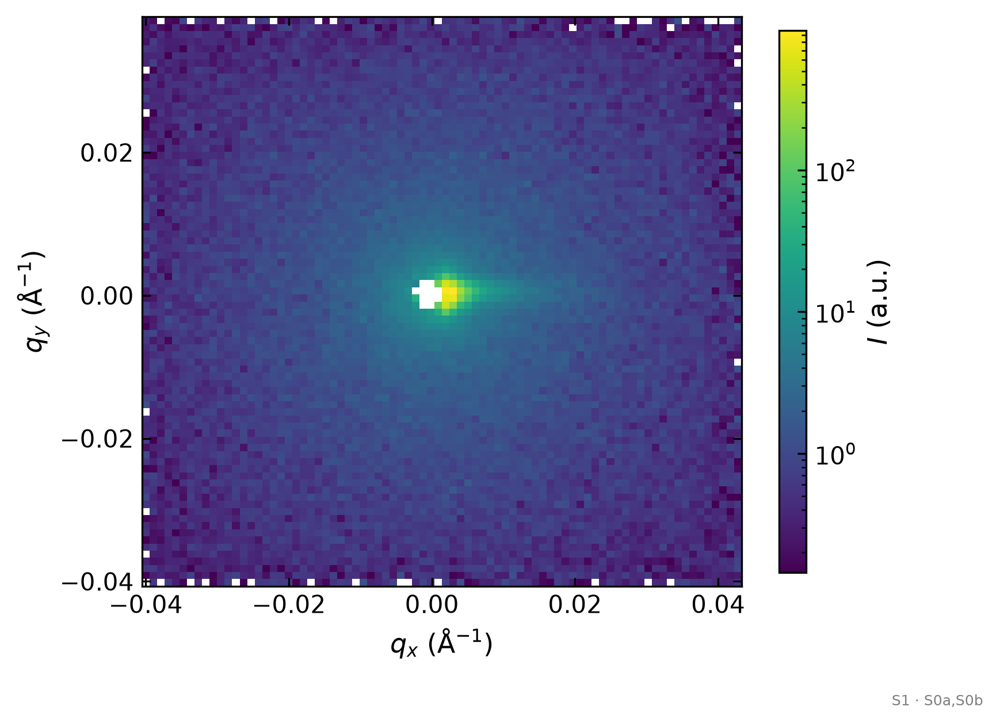

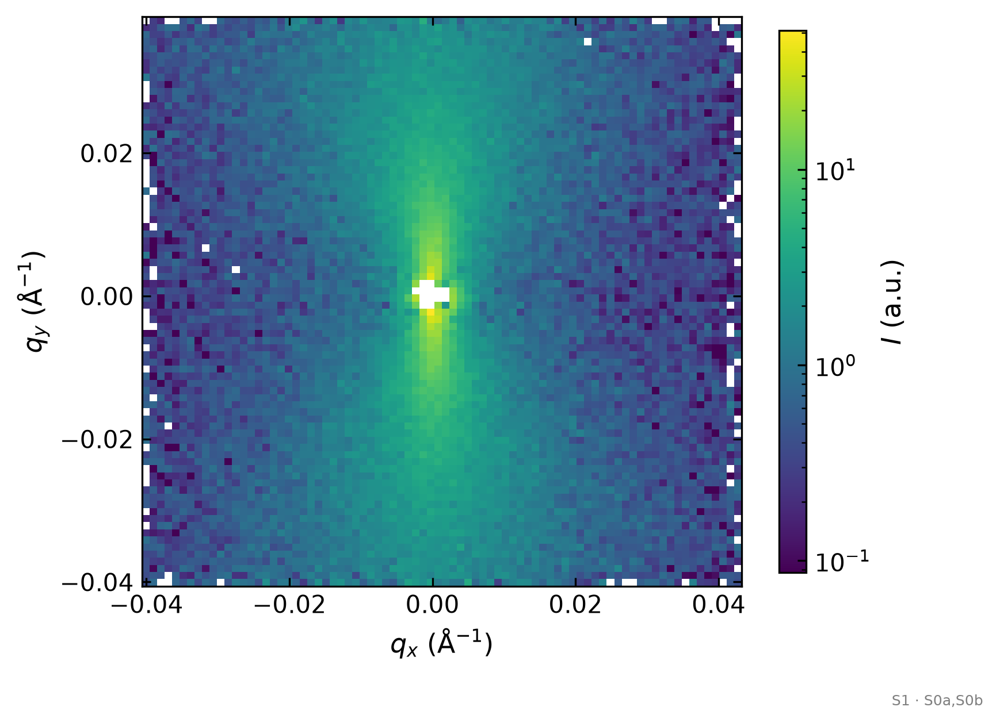

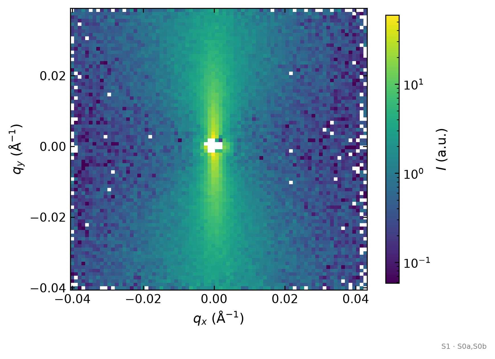

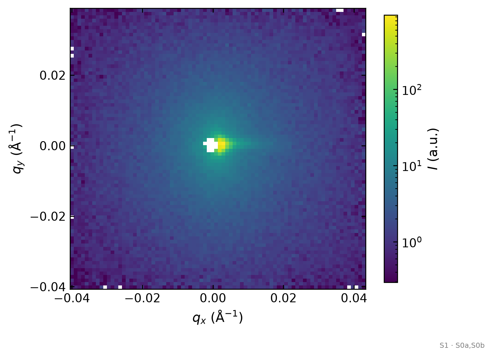


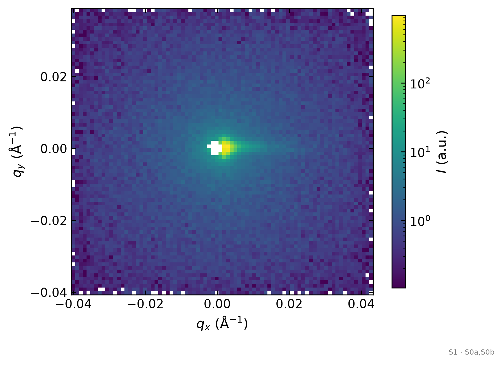

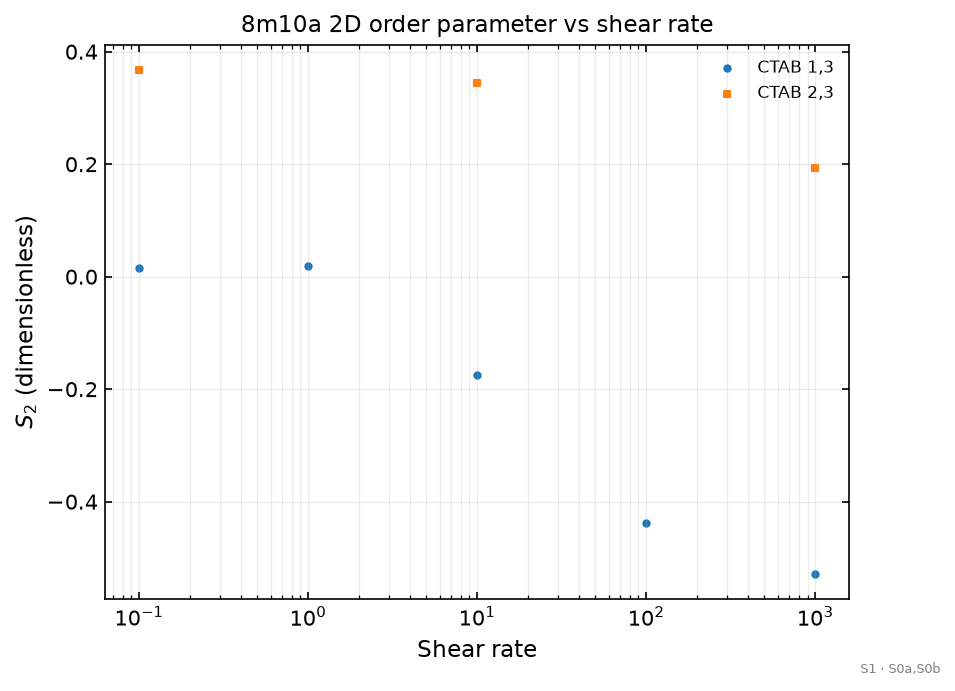
All 16 figures in figures/

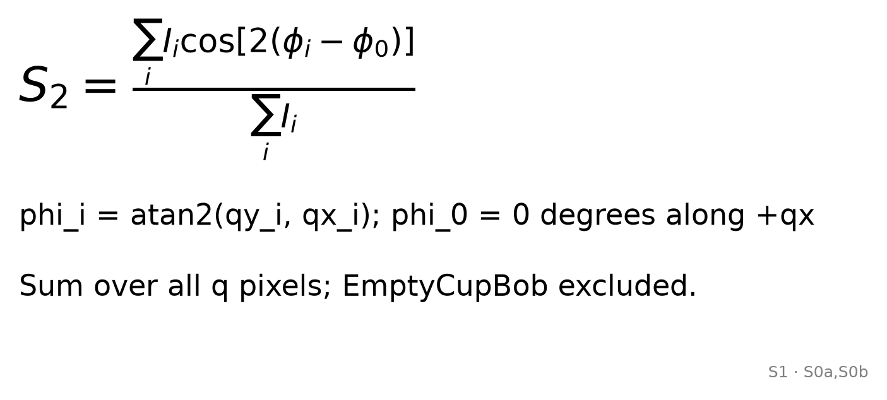
order_parameter_table.csv 12 rows
| file | concentration | shear_rate | condition | S2 | pixels |
|---|---|---|---|---|---|
| CTAB_1,3_0shear_8m10a_8m10a_Iqxqy.dat | 1,3 | 0 | steady | 0.0149726 | 6389 |
| CTAB_2,3_0shear_8m10a_8m10a_Iqxqy.dat | 2,3 | 0 | steady | 0.367822 | 6389 |
| CTAB_1,3_0.1shear_8m10a_8m10a_Iqxqy.dat | 1,3 | 0.1 | steady | 0.0149656 | 6389 |
| CTAB_2,3_0.1shear_8m10a_8m10a_Iqxqy.dat | 2,3 | 0.1 | steady | 0.367916 | 6389 |
| CTAB_1,3_1shear_8m10a_8m10a_Iqxqy.dat | 1,3 | 1 | steady | 0.0182965 | 6389 |
| CTAB_1,3_10shear_8m10a_8m10a_Iqxqy.dat | 1,3 | 10 | steady | -0.174875 | 6389 |
| CTAB_2,3_10shear_8m10a_8m10a_Iqxqy.dat | 2,3 | 10 | steady | 0.344552 | 6389 |
| CTAB_1,3_100shear_8m10a_8m10a_Iqxqy.dat | 1,3 | 100 | steady | -0.437532 | 6389 |
| CTAB_1,3_1000shear_8m10a_8m10a_Iqxqy.dat | 1,3 | 1000 | steady | -0.528154 | 6389 |
| CTAB_2,3_1000shear_8m10a_8m10a_Iqxqy.dat | 2,3 | 1000 | steady | 0.192534 | 6389 |
| CTAB_1,3_0shear-return_8m10a_8m10a_Iqxqy.dat | 1,3 | 0 | 0-shear return | 0.00830604 | 6389 |
| CTAB_2,3_0shear-return_8m10a_8m10a_Iqxqy.dat | 2,3 | 0 | 0-shear return | 0.370689 | 6389 |
reduction_table.csv 28 rows
| Idx | Sample | Config | Scatt | Trans | Thick | Bkg | BkgTr | Empty | Status | Start |
|---|---|---|---|---|---|---|---|---|---|---|
| 1 | EmptyCupBob_1,3_0shear_4m2.5a | 4m2.5a | 188908 S-EmptyCupBob 1,3_0shear 4m2.5a | 188904 T-EmptyCupBob 1,3_0shear 4m2.5a | 0.1 | — | — | 188898 T-empty beam 1,3 4m2.5a | done | |
| 2 | EmptyCupBob_2,3_0shear_4m2.5a | 4m2.5a | 188909 S-EmptyCupBob 2,3_0shear 4m2.5a | 188905 T-EmptyCupBob 2,3_0shear 4m2.5a | 0.1 | — | — | 188918 T-empty beam 2,3 4m2.5a | done | |
| 3 | CTAB_1,3_0shear_4m2.5a | 4m2.5a | 188929 S-CTAB 1,3_0shear 4m2.5a | 188923 T-CTAB 1,3_0shear 4m2.5a | 0.1 | 188908 S-EmptyCupBob 1,3_0shear 4m2.5a | 188904 T-EmptyCupBob 1,3_0shear 4m2.5a | 188898 T-empty beam 1,3 4m2.5a | done | |
| 4 | CTAB_2,3_0shear_4m2.5a | 4m2.5a | 188930 S-CTAB 2,3_0shear 4m2.5a | 188924 T-CTAB 2,3_0shear 4m2.5a | 0.1 | 188909 S-EmptyCupBob 2,3_0shear 4m2.5a | 188905 T-EmptyCupBob 2,3_0shear 4m2.5a | 188918 T-empty beam 2,3 4m2.5a | done | |
| 5 | CTAB_1,3_0.1shear_4m2.5a | 4m2.5a | 188931 S-CTAB 1,3_0.1shear 4m2.5a | 188923 T-CTAB 1,3_0shear 4m2.5a | 0.1 | 188908 S-EmptyCupBob 1,3_0shear 4m2.5a | 188904 T-EmptyCupBob 1,3_0shear 4m2.5a | 188898 T-empty beam 1,3 4m2.5a | done | |
| 6 | CTAB_2,3_0.1shear_4m2.5a | 4m2.5a | 188932 S-CTAB 2,3_0.1shear 4m2.5a | 188924 T-CTAB 2,3_0shear 4m2.5a | 0.1 | 188909 S-EmptyCupBob 2,3_0shear 4m2.5a | 188905 T-EmptyCupBob 2,3_0shear 4m2.5a | 188918 T-empty beam 2,3 4m2.5a | done | |
| 7 | CTAB_1,3_1shear_4m2.5a | 4m2.5a | 188936 S-CTAB 1,3_1shear 4m2.5a | 188923 T-CTAB 1,3_0shear 4m2.5a | 0.1 | 188908 S-EmptyCupBob 1,3_0shear 4m2.5a | 188904 T-EmptyCupBob 1,3_0shear 4m2.5a | 188898 T-empty beam 1,3 4m2.5a | done | |
| 8 | CTAB_1,3_10shear_4m2.5a | 4m2.5a | 188939 S-CTAB 1,3_10shear 4m2.5a | 188923 T-CTAB 1,3_0shear 4m2.5a | 0.1 | 188908 S-EmptyCupBob 1,3_0shear 4m2.5a | 188904 T-EmptyCupBob 1,3_0shear 4m2.5a | 188898 T-empty beam 1,3 4m2.5a | done | |
| 9 | CTAB_2,3_10shear_4m2.5a | 4m2.5a | 188940 S-CTAB 2,3_10shear 4m2.5a | 188924 T-CTAB 2,3_0shear 4m2.5a | 0.1 | 188909 S-EmptyCupBob 2,3_0shear 4m2.5a | 188905 T-EmptyCupBob 2,3_0shear 4m2.5a | 188918 T-empty beam 2,3 4m2.5a | done | |
| 10 | CTAB_1,3_100shear_4m2.5a | 4m2.5a | 188941 S-CTAB 1,3_100shear 4m2.5a | 188923 T-CTAB 1,3_0shear 4m2.5a | 0.1 | 188908 S-EmptyCupBob 1,3_0shear 4m2.5a | 188904 T-EmptyCupBob 1,3_0shear 4m2.5a | 188898 T-empty beam 1,3 4m2.5a | done | |
| 11 | CTAB_1,3_1000shear_4m2.5a | 4m2.5a | 188945 S-CTAB 1,3_1000shear 4m2.5a | 188923 T-CTAB 1,3_0shear 4m2.5a | 0.1 | 188908 S-EmptyCupBob 1,3_0shear 4m2.5a | 188904 T-EmptyCupBob 1,3_0shear 4m2.5a | 188898 T-empty beam 1,3 4m2.5a | done | |
| 12 | CTAB_2,3_1000shear_4m2.5a | 4m2.5a | 188946 S-CTAB 2,3_1000shear 4m2.5a | 188924 T-CTAB 2,3_0shear 4m2.5a | 0.1 | 188909 S-EmptyCupBob 2,3_0shear 4m2.5a | 188905 T-EmptyCupBob 2,3_0shear 4m2.5a | 188918 T-empty beam 2,3 4m2.5a | done | |
| 13 | CTAB_1,3_0shear-return_4m2.5a | 4m2.5a | 188947 S-CTAB 1,3_0shear-return 4m2.5a | 188923 T-CTAB 1,3_0shear 4m2.5a | 0.1 | 188908 S-EmptyCupBob 1,3_0shear 4m2.5a | 188904 T-EmptyCupBob 1,3_0shear 4m2.5a | 188898 T-empty beam 1,3 4m2.5a | done | |
| 14 | CTAB_2,3_0shear-return_4m2.5a | 4m2.5a | 188948 S-CTAB 2,3_0shear-return 4m2.5a | 188924 T-CTAB 2,3_0shear 4m2.5a | 0.1 | 188909 S-EmptyCupBob 2,3_0shear 4m2.5a | 188905 T-EmptyCupBob 2,3_0shear 4m2.5a | 188918 T-empty beam 2,3 4m2.5a | done | |
| 15 | EmptyCupBob_1,3_0shear_8m10a | 8m10a | 188910 S-EmptyCupBob 1,3_0shear 8m10a | 188906 T-EmptyCupBob 1,3_0shear 8m10a | 0.1 | — | — | 188899 T-empty beam 1,3 8m8a | done | |
| 16 | EmptyCupBob_2,3_0shear_8m10a | 8m10a | 188911 S-EmptyCupBob 2,3_0shear 8m10a | 188907 T-EmptyCupBob 2,3_0shear 8m10a | 0.1 | — | — | 188919 T-empty beam 2,3 8m8a | done | |
| 17 | CTAB_1,3_0shear_8m10a | 8m10a | 188927 S-CTAB 1,3_0shear 8m10a | 188925 T-CTAB 1,3_0shear 8m10a | 0.1 | 188910 S-EmptyCupBob 1,3_0shear 8m10a | 188906 T-EmptyCupBob 1,3_0shear 8m10a | 188899 T-empty beam 1,3 8m8a | done | |
| 18 | CTAB_2,3_0shear_8m10a | 8m10a | 188928 S-CTAB 2,3_0shear 8m10a | 188926 T-CTAB 2,3_0shear 8m10a | 0.1 | 188911 S-EmptyCupBob 2,3_0shear 8m10a | 188907 T-EmptyCupBob 2,3_0shear 8m10a | 188919 T-empty beam 2,3 8m8a | done | |
| 19 | CTAB_1,3_0.1shear_8m10a | 8m10a | 188933 S-CTAB 1,3_0.1shear 8m10a | 188925 T-CTAB 1,3_0shear 8m10a | 0.1 | 188910 S-EmptyCupBob 1,3_0shear 8m10a | 188906 T-EmptyCupBob 1,3_0shear 8m10a | 188899 T-empty beam 1,3 8m8a | done | |
| 20 | CTAB_2,3_0.1shear_8m10a | 8m10a | 188934 S-CTAB 2,3_0.1shear 8m10a | 188926 T-CTAB 2,3_0shear 8m10a | 0.1 | 188911 S-EmptyCupBob 2,3_0shear 8m10a | 188907 T-EmptyCupBob 2,3_0shear 8m10a | 188919 T-empty beam 2,3 8m8a | done | |
| 21 | CTAB_1,3_1shear_8m10a | 8m10a | 188935 S-CTAB 1,3_1shear 8m10a | 188925 T-CTAB 1,3_0shear 8m10a | 0.1 | 188910 S-EmptyCupBob 1,3_0shear 8m10a | 188906 T-EmptyCupBob 1,3_0shear 8m10a | 188899 T-empty beam 1,3 8m8a | done | |
| 22 | CTAB_1,3_10shear_8m10a | 8m10a | 188937 S-CTAB 1,3_10shear 8m10a | 188925 T-CTAB 1,3_0shear 8m10a | 0.1 | 188910 S-EmptyCupBob 1,3_0shear 8m10a | 188906 T-EmptyCupBob 1,3_0shear 8m10a | 188899 T-empty beam 1,3 8m8a | done | |
| 23 | CTAB_2,3_10shear_8m10a | 8m10a | 188938 S-CTAB 2,3_10shear 8m10a | 188926 T-CTAB 2,3_0shear 8m10a | 0.1 | 188911 S-EmptyCupBob 2,3_0shear 8m10a | 188907 T-EmptyCupBob 2,3_0shear 8m10a | 188919 T-empty beam 2,3 8m8a | done | |
| 24 | CTAB_1,3_100shear_8m10a | 8m10a | 188942 S-CTAB 1,3_100shear 8m10a | 188925 T-CTAB 1,3_0shear 8m10a | 0.1 | 188910 S-EmptyCupBob 1,3_0shear 8m10a | 188906 T-EmptyCupBob 1,3_0shear 8m10a | 188899 T-empty beam 1,3 8m8a | done | |
| 25 | CTAB_1,3_1000shear_8m10a | 8m10a | 188943 S-CTAB 1,3_1000shear 8m10a | 188925 T-CTAB 1,3_0shear 8m10a | 0.1 | 188910 S-EmptyCupBob 1,3_0shear 8m10a | 188906 T-EmptyCupBob 1,3_0shear 8m10a | 188899 T-empty beam 1,3 8m8a | done | |
| 26 | CTAB_2,3_1000shear_8m10a | 8m10a | 188944 S-CTAB 2,3_1000shear 8m10a | 188926 T-CTAB 2,3_0shear 8m10a | 0.1 | 188911 S-EmptyCupBob 2,3_0shear 8m10a | 188907 T-EmptyCupBob 2,3_0shear 8m10a | 188919 T-empty beam 2,3 8m8a | done | |
| 27 | CTAB_1,3_0shear-return_8m10a | 8m10a | 188949 S-CTAB 1,3_0shear-return 8m10a | 188925 T-CTAB 1,3_0shear 8m10a | 0.1 | 188910 S-EmptyCupBob 1,3_0shear 8m10a | 188906 T-EmptyCupBob 1,3_0shear 8m10a | 188899 T-empty beam 1,3 8m8a | done | |
| 28 | CTAB_2,3_0shear-return_8m10a | 8m10a | 188950 S-CTAB 2,3_0shear-return 8m10a | 188926 T-CTAB 2,3_0shear 8m10a | 0.1 | 188911 S-EmptyCupBob 2,3_0shear 8m10a | 188907 T-EmptyCupBob 2,3_0shear 8m10a | 188919 T-empty beam 2,3 8m8a | done |
summary.csv 1 row
| merged_curve_count | reduction_table_rows | source | intensity_unit_from_reduction_record |
|---|---|---|---|
| 14 | 28 | S0a | a.u. (relative) |
Script output (last lines of the last good run)
trimmed merged_CTAB_1,3_0.1shear_Iq.txt: 124 → 117 points (first 2, last 5 removed) → merged_CTAB_1,3_0.1shear_Iq_trimmed.txt trimmed merged_CTAB_1,3_0shear_Iq.txt: 124 → 117 points (first 2, last 5 removed) → merged_CTAB_1,3_0shear_Iq_trimmed.txt trimmed merged_CTAB_1,3_0shear-return_Iq.txt: 124 → 117 points (first 2, last 5 removed) → merged_CTAB_1,3_0shear-return_Iq_trimmed.txt trimmed merged_CTAB_1,3_1000shear_Iq.txt: 124 → 117 points (first 2, last 5 removed) → merged_CTAB_1,3_1000shear_Iq_trimmed.txt trimmed merged_CTAB_1,3_100shear_Iq.txt: 124 → 117 points (first 2, last 5 removed) → merged_CTAB_1,3_100shear_Iq_trimmed.txt trimmed merged_CTAB_1,3_10shear_Iq.txt: 124 → 117 points (first 2, last 5 removed) → merged_CTAB_1,3_10shear_Iq_trimmed.txt trimmed merged_CTAB_1,3_1shear_Iq.txt: 124 → 117 points (first 2, last 5 removed) → merged_CTAB_1,3_1shear_Iq_trimmed.txt trimmed merged_CTAB_2,3_0.1shear_Iq.txt: 124 → 117 points (first 2, last 5 removed) → merged_CTAB_2,3_0.1shear_Iq_trimmed.txt trimmed merged_CTAB_2,3_0shear_Iq.txt: 124 → 117 points (first 2, last 5 removed) → merged_CTAB_2,3_0shear_Iq_trimmed.txt trimmed merged_CTAB_2,3_0shear-return_Iq.txt: 124 → 117 points (first 2, last 5 removed) → merged_CTAB_2,3_0shear-return_Iq_trimmed.txt trimmed merged_CTAB_2,3_1000shear_Iq.txt: 124 → 117 points (first 2, last 5 removed) → merged_CTAB_2,3_1000shear_Iq_trimmed.txt trimmed merged_CTAB_2,3_10shear_Iq.txt: 124 → 117 points (first 2, last 5 removed) → merged_CTAB_2,3_10shear_Iq_trimmed.txt trimmed merged_EmptyCupBob_1,3_0shear_Iq.txt: 124 → 117 points (first 2, last 5 removed) → merged_EmptyCupBob_1,3_0shear_Iq_trimmed.txt trimmed merged_EmptyCupBob_2,3_0shear_Iq.txt: 124 → 117 points (first 2, last 5 removed) → merged_EmptyCupBob_2,3_0shear_Iq_trimmed.txt [sansbook.html] gallery.html: 15 figures in 2 section(s), 4 per row
Script: reduction_summary.py
import re
import numpy as np
import matplotlib.pyplot as plt
from sansbook.lib import io, plot, plot2d, out, html
from sansbook.lib.paths import source_files, page_file
from sansbook.lib import reduction
files = source_files("S0a", "merged*_Iq.txt")
trimmed_files = []
for path in files:
trimmed_path = page_file(f"{path.stem}_trimmed.txt")
io.trim_points(path, first=2, last=5, out=trimmed_path.name)
trimmed_files.append(trimmed_path)
curves = io.load_many(trimmed_files)
# Preserve the complete eqsanscli working table frozen with the source.
table = reduction.show_table("S0a")
out.summary(table, "reduction_table.csv")
ax = plot.iq(curves, scale="loglog")
ax.set_ylabel(r"$I(q)$ (a.u.)")
merged_plot_path = plot.save(ax.figure, "merged_profiles_overlay", overview=True)
# 2D profiles from the 8m10a configuration; save individual maps and include them in a gallery.
map_files = source_files("S0b", "*Iqxqy.dat")
gallery_items = []
for path in map_files:
image = io.load(path)
map_ax = plot2d.image(image, log=True)
map_ax.collections[0].colorbar.set_label(r"$I$ (a.u.)")
map_path = plot.save(map_ax.figure, f"2d_{path.stem}")
gallery_items.append((map_path, path.stem))
html.gallery(
{
"Merged I(q) profiles": [(merged_plot_path, "Overlay of all merged I(q) curves")],
"8m10a · I(qx,qy) profiles": gallery_items,
},
title="Merged I(q) and 8m10a 2D profiles",
columns=4,
intro=("For each CTAB 8m10a map, the second-order orientational parameter was calculated as "
"S₂ = Σᵢ Iᵢ cos[2(φᵢ − φ₀)] / Σᵢ Iᵢ, where φᵢ = atan2(qyᵢ, qxᵢ) and φ₀ = 0° along +qx. "
"The sums include all finite q pixels; EmptyCupBob maps are excluded. This intensity-weighted "
"measure describes the net twofold orientation relative to +qx. Intensities are relative (a.u.)."),
)
# Second-order orientational order parameter from all CTAB 8m10a maps.
# phi is measured from +qx; the user selected all q pixels and phi_0 = 0 degrees.
plot.equation(
[r"S_2=\frac{\sum_i I_i\cos[2(\phi_i-\phi_0)]}{\sum_i I_i}"],
"order_parameter_equation",
notes=["phi_i = atan2(qy_i, qx_i); phi_0 = 0 degrees along +qx",
"Sum over all q pixels; EmptyCupBob excluded."],
)
order_rows = []
for path in map_files:
if not path.name.startswith("CTAB_"):
continue
match = re.search(r"_(\d+(?:\.\d+)?)shear(-return)?_", path.name)
if match is None:
raise ValueError(f"Cannot parse shear rate from {path.name}")
shear_rate = float(match.group(1))
is_return = bool(match.group(2))
concentration = path.name.split("_")[1]
image = io.load(path)
qx, qy, intensity = np.asarray(image.qx), np.asarray(image.qy), np.asarray(image.i)
phi = np.arctan2(qy, qx)
valid = np.isfinite(intensity) & np.isfinite(phi)
numerator = np.sum(intensity[valid] * np.cos(2 * phi[valid]))
denominator = np.sum(intensity[valid])
if denominator == 0:
raise ValueError(f"Zero total intensity in {path.name}")
order_rows.append({
"file": path.name,
"concentration": concentration,
"shear_rate": shear_rate,
"condition": "0-shear return" if is_return else "steady",
"S2": numerator / denominator,
"pixels": int(np.count_nonzero(valid)),
})
out.summary(order_rows, "order_parameter_table.csv")
fig, ax = plt.subplots()
markers = {"1,3": "o", "2,3": "s"}
for concentration in sorted({row["concentration"] for row in order_rows}):
points = [row for row in order_rows
if row["concentration"] == concentration and row["shear_rate"] > 0]
ax.scatter([row["shear_rate"] for row in points], [row["S2"] for row in points],
marker=markers.get(concentration, "o"), label=f"CTAB {concentration}")
ax.set_xscale("log")
ax.set_xlabel(r"Shear rate")
ax.set_ylabel(r"$S_2$ (dimensionless)")
ax.set_title(r"8m10a 2D order parameter vs shear rate")
ax.legend()
ax.grid(True, which="both", alpha=0.25)
plot.save(fig, "order_parameter_vs_shear_rate", overview=True)
out.summary({
"merged_curve_count": len(curves),
"reduction_table_rows": len(table),
"source": "S0a",
"intensity_unit_from_reduction_record": "a.u. (relative)",
}, "summary.csv")
Provenance: commit 7d1e894b4a, python 3.11.17, 31 input file(s)
{
"id": "S1",
"parents": [
"S0a",
"S0b"
],
"name": "reduction_summary_merged_profiles",
"created_utc": "2026-11-03T18:53:43Z",
"run_utc": "2026-11-03T20:28:34Z",
"run_number": 11,
"script": "reduction_summary.py",
"code": {
"book_commit": "7d1e894b4ab8722247aa4a5a29cfb7ad45ec014b",
"dirty_files": [],
"sansbook": "0.3.10",
"edited_outside_sansbook": false
},
"env": {
"python": "3.11.17",
"executable": "/gpfs/neutronsfs/instruments/EQSANS/shared/script/sansbook/versions/v0.3.10/bin/python",
"key_packages": {
"numpy": "2.4.6",
"matplotlib": "3.11.2"
}
},
"model": {
"llm": "openai/gpt-6-luna",
"session": "2026-11-03T151105"
},
"sources": [
"S0a",
"S0b"
],
"inputs": [
{
"source_id": "S0a",
"path": "data/merged_CTAB_1,3_0.1shear_Iq.txt",
"sha256": "83f9d863167cf3b5f53ce28c818c4615d7c81c53550bdf19ed33023914f0a423"
},
{
"source_id": "S0a",
"path": "data/merged_CTAB_1,3_0shear-return_Iq.txt",
"sha256": "89c02e3da774516821fcf859fa33c39797b1301745535d5dbf83b587532ecea6"
},
{
"source_id": "S0a",
"path": "data/merged_CTAB_1,3_0shear_Iq.txt",
"sha256": "34cbe79b7a2ea49df64191a48333ce3797f2dc1c6c21f95e6a98715872788174"
},
{
"source_id": "S0a",
"path": "data/merged_CTAB_1,3_1000shear_Iq.txt",
"sha256": "9661bb8561988b4111309ed9d672785457ed843c158f012c8452df1a432b6529"
},
{
"source_id": "S0a",
"path": "data/merged_CTAB_1,3_100shear_Iq.txt",
"sha256": "039e94ca690bf343361147625478ae91297b4ca7c99118d8093d6cb13c0b3f06"
},
{
"source_id": "S0a",
"path": "data/merged_CTAB_1,3_10shear_Iq.txt",
"sha256": "12fee8688187654f3bfc47b402f2b279288d4c26cbd16e8ac361d87732b63e58"
},
{
"source_id": "S0a",
"path": "data/merged_CTAB_1,3_1shear_Iq.txt",
"sha256": "74113e28ae549e6df9142cc2c0594dd32d4d7477ce5ec05a10c7176e25ca929a"
},
{
"source_id": "S0a",
"path": "data/merged_CTAB_2,3_0.1shear_Iq.txt",
"sha256": "7c3bfd8fbefdce550177d7ccd70115b9ad93faa66ece04634b52298c6d8a22a2"
},
{
"source_id": "S0a",
"path": "data/merged_CTAB_2,3_0shear-return_Iq.txt",
"sha256": "a0bf6f508d6ff81037c9c844250051ccfd7a939b74a88c8b9a25200a4db1c12c"
},
{
"source_id": "S0a",
"path": "data/merged_CTAB_2,3_0shear_Iq.txt",
"sha256": "8175a84a3cd8d1603507cbd0005e25b49d7a9072fc178a43397c820918dbc76e"
},
{
"source_id": "S0a",
"path": "data/merged_CTAB_2,3_1000shear_Iq.txt",
"sha256": "b3ae0be439747ee9b78322e2d22e8ece276cc80535b47dbda557c45dfd66d1c5"
},
{
"source_id": "S0a",
"path": "data/merged_CTAB_2,3_10shear_Iq.txt",
"sha256": "f7696b0a77bdb20a4b1038af8428d1b159b46172e25df93a6dce39a263a18432"
},
{
"source_id": "S0a",
"path": "data/merged_EmptyCupBob_1,3_0shear_Iq.txt",
"sha256": "c26df6527081abb75515548b8cefa4acb01b76b3bb1a2a70447eeb709ce54d70"
},
{
"source_id": "S0a",
"path": "data/merged_EmptyCupBob_2,3_0shear_Iq.txt",
"sha256": "544aa9f9d77a6532cdb0a593471da36d030256c710a8190d3bc7e64c0c427265"
},
{
"book_path": "sources/S0a_ipts_37681_merged_ctab_curves/reduction/attached_session.json",
"sha256": "0bd3e199f28d5e45b8ed695818065838e3244b17ec74a4decf16ba715af158e7"
},
{
"book_path": "sources/S0a_ipts_37681_merged_ctab_curves/reduction/record.json",
"sha256": "0ee805288fe3d821ee3c510c51f5be6e348dd8b7bf482c7fff66e5089ff45e76"
},
{
"source_id": "S0b",
"path": "data/CTAB_1,3_0.1shear_8m10a_8m10a_Iqxqy.dat",
"sha256": "cff2d176e3478ade4f91113c3957b5bd621363cb64b0e59317f7c662331519e7"
},
{
"source_id": "S0b",
"path": "data/CTAB_1,3_0shear-return_8m10a_8m10a_Iqxqy.dat",
"sha256": "9d71717aef178135a7a8e3961f3678d69d52fe3c27087a1dcc8250ada9588f20"
},
{
"source_id": "S0b",
"path": "data/CTAB_1,3_0shear_8m10a_8m10a_Iqxqy.dat",
"sha256": "dd4fff04efeebaf6614fd8c0c4e89bcb30f59acdb9c0d9d8971a6a3f05c8296e"
},
{
"source_id": "S0b",
"path": "data/CTAB_1,3_1000shear_8m10a_8m10a_Iqxqy.dat",
"sha256": "7566ffd04f003afb75be29a90c626eb5ce9fa40ca444ad8318010068159d3bac"
},
{
"source_id": "S0b",
"path": "data/CTAB_1,3_100shear_8m10a_8m10a_Iqxqy.dat",
"sha256": "e650f1be0201c9e52d3a4f7184c52eaad8c6772119c28c21d389be40ef8d01b3"
},
{
"source_id": "S0b",
"path": "data/CTAB_1,3_10shear_8m10a_8m10a_Iqxqy.dat",
"sha256": "2d3ac22bf2e0f6c233bd2341f7482d9535881143fd4c23b1e0262e7162b3ae46"
},
{
"source_id": "S0b",
"path": "data/CTAB_1,3_1shear_8m10a_8m10a_Iqxqy.dat",
"sha256": "0c635363f444646cad61bb50e42fd5bd08385693d204d0da8ed6c5d3fffa7f3b"
},
{
"source_id": "S0b",
"path": "data/CTAB_2,3_0.1shear_8m10a_8m10a_Iqxqy.dat",
"sha256": "60982d41639e58023697263956f6650ab0edca2d1e537d2a064570bae8286510"
},
{
"source_id": "S0b",
"path": "data/CTAB_2,3_0shear-return_8m10a_8m10a_Iqxqy.dat",
"sha256": "d1627fbdbfecaf6ee9ba3ad50acd94c4578fb10075ae2a53b7059b0c241bf13e"
},
{
"source_id": "S0b",
"path": "data/CTAB_2,3_0shear_8m10a_8m10a_Iqxqy.dat",
"sha256": "d98f0932032216b2343d378ce0f1be1f4bf76cd70ac4c540233fe63b1e06dbd6"
},
{
"source_id": "S0b",
"path": "data/CTAB_2,3_1000shear_8m10a_8m10a_Iqxqy.dat",
"sha256": "64d28250b707b8d0183751b161aa5a79825399d099771bd9d68fa40b2e0d8582"
},
{
"source_id": "S0b",
"path": "data/CTAB_2,3_10shear_8m10a_8m10a_Iqxqy.dat",
"sha256": "378025bef9735daa6ca36bf8a8bb923c97f5d42cfbbacb5db4cd1777bdb1281f"
},
{
"source_id": "S0b",
"path": "data/EmptyCupBob_1,3_0shear_8m10a_8m10a_Iqxqy.dat",
"sha256": "9535c4cb68692944b857e51eb0a69125668949c6330e596c6736a0b4f3b9b519"
},
{
"source_id": "S0b",
"path": "data/EmptyCupBob_2,3_0shear_8m10a_8m10a_Iqxqy.dat",
"sha256": "284bbd375c4de87da6028e9cede2fa66f416129012ac9f81117f9a653af9552e"
},
{
"book_path": "sources/S0b_ipts_37681_8m10a_2d_profiles/reduction/record.json",
"sha256": "c1007946add63e4462708830a0d944d816a09d41dd801428d38fc0f6da7dd212"
}
],
"params": {
"trim:merged_CTAB_1,3_0.1shear_Iq.txt": {
"first": 2,
"last": 5,
"points_in": 124,
"points_out": 117,
"out": "merged_CTAB_1,3_0.1shear_Iq_trimmed.txt"
},
"trim:merged_CTAB_1,3_0shear_Iq.txt": {
"first": 2,
"last": 5,
"points_in": 124,
"points_out": 117,
"out": "merged_CTAB_1,3_0shear_Iq_trimmed.txt"
},
"trim:merged_CTAB_1,3_0shear-return_Iq.txt": {
"first": 2,
"last": 5,
"points_in": 124,
"points_out": 117,
"out": "merged_CTAB_1,3_0shear-return_Iq_trimmed.txt"
},
"trim:merged_CTAB_1,3_1000shear_Iq.txt": {
"first": 2,
"last": 5,
"points_in": 124,
"points_out": 117,
"out": "merged_CTAB_1,3_1000shear_Iq_trimmed.txt"
},
"trim:merged_CTAB_1,3_100shear_Iq.txt": {
"first": 2,
"last": 5,
"points_in": 124,
"points_out": 117,
"out": "merged_CTAB_1,3_100shear_Iq_trimmed.txt"
},
"trim:merged_CTAB_1,3_10shear_Iq.txt": {
"first": 2,
"last": 5,
"points_in": 124,
"points_out": 117,
"out": "merged_CTAB_1,3_10shear_Iq_trimmed.txt"
},
"trim:merged_CTAB_1,3_1shear_Iq.txt": {
"first": 2,
"last": 5,
"points_in": 124,
"points_out": 117,
"out": "merged_CTAB_1,3_1shear_Iq_trimmed.txt"
},
"trim:merged_CTAB_2,3_0.1shear_Iq.txt": {
"first": 2,
"last": 5,
"points_in": 124,
"points_out": 117,
"out": "merged_CTAB_2,3_0.1shear_Iq_trimmed.txt"
},
"trim:merged_CTAB_2,3_0shear_Iq.txt": {
"first": 2,
"last": 5,
"points_in": 124,
"points_out": 117,
"out": "merged_CTAB_2,3_0shear_Iq_trimmed.txt"
},
"trim:merged_CTAB_2,3_0shear-return_Iq.txt": {
"first": 2,
"last": 5,
"points_in": 124,
"points_out": 117,
"out": "merged_CTAB_2,3_0shear-return_Iq_trimmed.txt"
},
"trim:merged_CTAB_2,3_1000shear_Iq.txt": {
"first": 2,
"last": 5,
"points_in": 124,
"points_out": 117,
"out": "merged_CTAB_2,3_1000shear_Iq_trimmed.txt"
},
"trim:merged_CTAB_2,3_10shear_Iq.txt": {
"first": 2,
"last": 5,
"points_in": 124,
"points_out": 117,
"out": "merged_CTAB_2,3_10shear_Iq_trimmed.txt"
},
"trim:merged_EmptyCupBob_1,3_0shear_Iq.txt": {
"first": 2,
"last": 5,
"points_in": 124,
"points_out": 117,
"out": "merged_EmptyCupBob_1,3_0shear_Iq_trimmed.txt"
},
"trim:merged_EmptyCupBob_2,3_0shear_Iq.txt": {
"first": 2,
"last": 5,
"points_in": 124,
"points_out": 117,
"out": "merged_EmptyCupBob_2,3_0shear_Iq_trimmed.txt"
}
},
"decisions": [
"D1",
"D2",
"D3"
],
"references": [],
"outputs": [
"figures/.overview",
"figures/s1_2d_CTAB_1,3_0.1shear_8m10a_8m10a_Iqxqy.png",
"figures/s1_2d_CTAB_1,3_0shear-return_8m10a_8m10a_Iqxqy.png",
"figures/s1_2d_CTAB_1,3_0shear_8m10a_8m10a_Iqxqy.png",
"figures/s1_2d_CTAB_1,3_1000shear_8m10a_8m10a_Iqxqy.png",
"figures/s1_2d_CTAB_1,3_100shear_8m10a_8m10a_Iqxqy.png",
"figures/s1_2d_CTAB_1,3_10shear_8m10a_8m10a_Iqxqy.png",
"figures/s1_2d_CTAB_1,3_1shear_8m10a_8m10a_Iqxqy.png",
"figures/s1_2d_CTAB_2,3_0.1shear_8m10a_8m10a_Iqxqy.png",
"figures/s1_2d_CTAB_2,3_0shear-return_8m10a_8m10a_Iqxqy.png",
"figures/s1_2d_CTAB_2,3_0shear_8m10a_8m10a_Iqxqy.png",
"figures/s1_2d_CTAB_2,3_1000shear_8m10a_8m10a_Iqxqy.png",
"figures/s1_2d_CTAB_2,3_10shear_8m10a_8m10a_Iqxqy.png",
"figures/s1_2d_EmptyCupBob_1,3_0shear_8m10a_8m10a_Iqxqy.png",
"figures/s1_2d_EmptyCupBob_2,3_0shear_8m10a_8m10a_Iqxqy.png",
"figures/s1_merged_profiles_overlay.png",
"figures/s1_order_parameter_equation.png",
"figures/s1_order_parameter_vs_shear_rate.png",
"gallery.html",
"gallery.json",
"merged_CTAB_1,3_0.1shear_Iq_trimmed.txt",
"merged_CTAB_1,3_0shear-return_Iq_trimmed.txt",
"merged_CTAB_1,3_0shear_Iq_trimmed.txt",
"merged_CTAB_1,3_1000shear_Iq_trimmed.txt",
"merged_CTAB_1,3_100shear_Iq_trimmed.txt",
"merged_CTAB_1,3_10shear_Iq_trimmed.txt",
"merged_CTAB_1,3_1shear_Iq_trimmed.txt",
"merged_CTAB_2,3_0.1shear_Iq_trimmed.txt",
"merged_CTAB_2,3_0shear-return_Iq_trimmed.txt",
"merged_CTAB_2,3_0shear_Iq_trimmed.txt",
"merged_CTAB_2,3_1000shear_Iq_trimmed.txt",
"merged_CTAB_2,3_10shear_Iq_trimmed.txt",
"merged_EmptyCupBob_1,3_0shear_Iq_trimmed.txt",
"merged_EmptyCupBob_2,3_0shear_Iq_trimmed.txt",
"order_parameter_table.csv",
"overview.png",
"reduction_table.csv",
"summary.csv"
],
"stdout": "reduction_summary_output.txt",
"returncode": 0,
"wall_s": 7.63,
"timed_out": false,
"cancelled": false,
"verdict": "live"
}S1b — zero_shear_fit
- Question
- For the two CTAB samples at 0 shear, do the merged I(q) curves support a SasView worm-like-chain fit, and what are the fitted structural parameters and fit limitations?
- Method
- Fit each of the exact CTAB_1,3_0shear and CTAB_2,3_0shear merged curves independently with SasView flexible_cylinder over the full measured q range. Fixed SLDs to the model defaults by convention, floated scale, and inspected fit/residual diagnostics.
- Result
- S1b: Independently fit the full available q ranges (0.001997–0.4551 Å⁻¹ for CTAB_1,3_0shear; 0.002064–0.4558 Å⁻¹ for CTAB_2,3_0shear) with SasView flexible_cylinder, the worm-like-chain implementation. CTAB_1,3_0shear: χ²ᵣ = 40.38; scale 0.0180677 ± 0.0000126 (relative, not a volume fraction); background 0.097536 ± 0.000182 a.u.; contour length 10 Å (at lower bound; uncertainty 652.8 Å); Kuhn length 1913.1 ± 278.3 Å; radius 21.0587 ± 0.0094 Å. CTAB_2,3_0shear: χ²ᵣ = 58.21; scale 0.0065882 ± 0.0000064 (relative); background 0.041930 ± 0.000092 a.u.; contour length 10000 Å (at upper bound; uncertainty 1244.7 Å); Kuhn length 458.6 ± 7.1 Å; radius 21.7500 ± 0.0141 Å. Residuals are strongly systematic: CTAB_1,3_0shear shows low-q deviations, oscillatory mid/high-q residuals and a prominent mismatch around q ≈ 0.15–0.25 Å⁻¹; CTAB_2,3_0shear likewise has low-q bias and pronounced structured residuals around q ≈ 0.08–0.25 Å⁻¹. Both fits fail the data despite the high-q baseline being broadly tracked. Merged curves have no dQ, so resolution smearing was not applied; the first curve includes a negative-intensity low-q point, while the log plot cannot display it. S0a is relative intensity (a.u.); SLDs were fixed to SasView defaults solely as a computational convention. These fits do not support reliable structural parameter interpretation; the length estimates are especially unconstrained and at opposite bounds.
- Next
- Treat S1b as a rejected full-range WLC fit; choose a justified alternative model or q range before structural interpretation.
- Decisions
- D2
- From
- S0a
- Folder
pages/S1b_zero_shear_fit/· 1 run · created 2026-11-03 · closed 2026-11-03

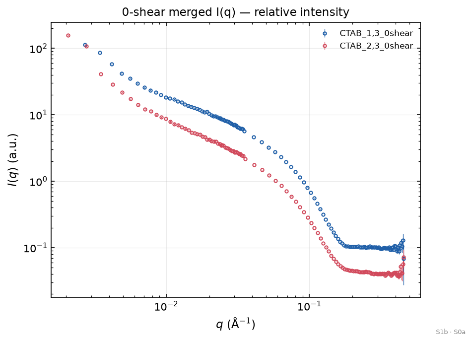


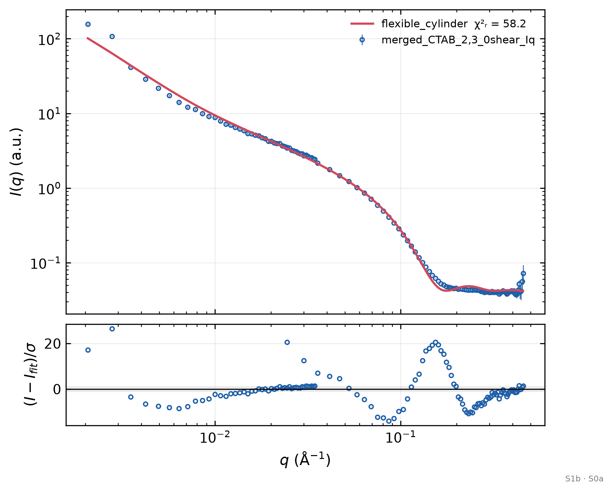
Fit: flexible_cylinder (CTAB_1_3_0shear_fit_params.json, sasmodels+bumps/lm)
χ²r = 40.3838 · q 0.001997–0.4551 Å⁻¹
| parameter | value | ± stderr | state | bounds |
|---|---|---|---|---|
| scale | 0.0180677 | 1.26151e-05 | free | [1e-08, 10000] |
| background | 0.0975356 | 0.000182017 | free | [-10, 10] |
| length | 10 | 652.844 | free | [10, 10000] |
| kuhn_length | 1913.11 | 278.303 | free | [1, 3000] |
| radius | 21.0587 | 0.0094263 | free | [1, 100] |
| sld | 1 | fixed (requested) | ||
| sld_solvent | 6.3 | fixed (requested) |
at bound: length at min 10
no resolution smearing (no dQ column)
Fit: flexible_cylinder (CTAB_2_3_0shear_fit_params.json, sasmodels+bumps/lm)
χ²r = 58.2096 · q 0.002064–0.4558 Å⁻¹
| parameter | value | ± stderr | state | bounds |
|---|---|---|---|---|
| scale | 0.0065882 | 6.42778e-06 | free | [1e-08, 10000] |
| background | 0.0419298 | 9.24103e-05 | free | [-10, 10] |
| length | 10000 | 1244.67 | free | [10, 10000] |
| kuhn_length | 458.583 | 7.08023 | free | [1, 3000] |
| radius | 21.75 | 0.0140774 | free | [1, 100] |
| sld | 1 | fixed (requested) | ||
| sld_solvent | 6.3 | fixed (requested) |
at bound: length at max 10000
no resolution smearing (no dQ column)
Fit: flexible_cylinder (fit_params.json, sasmodels+bumps/lm)
χ²r = 58.2096 · q 0.002064–0.4558 Å⁻¹
| parameter | value | ± stderr | state | bounds |
|---|---|---|---|---|
| scale | 0.0065882 | 6.42778e-06 | free | [1e-08, 10000] |
| background | 0.0419298 | 9.24103e-05 | free | [-10, 10] |
| length | 10000 | 1244.67 | free | [10, 10000] |
| kuhn_length | 458.583 | 7.08023 | free | [1, 3000] |
| radius | 21.75 | 0.0140774 | free | [1, 100] |
| sld | 1 | fixed (requested) | ||
| sld_solvent | 6.3 | fixed (requested) |
at bound: length at max 10000
no resolution smearing (no dQ column)
fit_summary.csv 2 rows
| sample | chi2r | at_bounds | scale | scale_stderr | background | background_stderr | length | length_stderr | kuhn_length | kuhn_length_stderr | radius | radius_stderr |
|---|---|---|---|---|---|---|---|---|---|---|---|---|
| CTAB_1,3_0shear | 40.3838 | ['length at min 10'] | 0.0180677 | 1.26151e-05 | 0.0975356 | 0.000182017 | 10 | 652.844 | 1913.11 | 278.303 | 21.0587 | 0.0094263 |
| CTAB_2,3_0shear | 58.2096 | ['length at max 10000'] | 0.0065882 | 6.42778e-06 | 0.0419298 | 9.24103e-05 | 10000 | 1244.67 | 458.583 | 7.08023 | 21.75 | 0.0140774 |
Script output (last lines of the last good run)
flexible_cylinder (sasmodels+bumps/lm): chi2r = 40.38, 124 points, 5 free, q 0.001997–0.4551 1/A scale 0.0180677 ± 1.262e-05 (free) [1e-08, 10000.0] background 0.0975356 ± 0.000182 (free) [-10.0, 10.0] length 10 ± 652.8 (free) [10.0, 10000.0] kuhn_length 1913.11 ± 278.3 (free) [1.0, 3000.0] radius 21.0587 ± 0.009426 (free) [1.0, 100.0] sld 1 (fixed) sld_solvent 6.3 (fixed) WARNING: length at min 10 note: no resolution smearing (no dQ column) flexible_cylinder (sasmodels+bumps/lm): chi2r = 58.21, 124 points, 5 free, q 0.002064–0.4558 1/A scale 0.0065882 ± 6.428e-06 (free) [1e-08, 10000.0] background 0.0419298 ± 9.241e-05 (free) [-10.0, 10.0] length 10000 ± 1245 (free) [10.0, 10000.0] kuhn_length 458.583 ± 7.08 (free) [1.0, 3000.0] radius 21.75 ± 0.01408 (free) [1.0, 100.0] sld 1 (fixed) sld_solvent 6.3 (fixed) WARNING: length at max 10000 note: no resolution smearing (no dQ column)
Script: zero_shear_wlc.py
import json
import shutil
import numpy as np
import matplotlib.pyplot as plt
from sansbook.lib import io, plot, fit_sas, out, stamp
from sansbook.lib.paths import source_file
source = "S0a"
files = [
source_file(source, "merged_CTAB_1,3_0shear_Iq.txt"),
source_file(source, "merged_CTAB_2,3_0shear_Iq.txt"),
]
curves = [io.load(f) for f in files]
names = ["CTAB_1,3_0shear", "CTAB_2,3_0shear"]
stamp.param("source", source)
stamp.param("samples", names)
stamp.param("model", "SasView flexible_cylinder (worm-like chain)")
stamp.param("fit_q_ranges_A^-1", [[float(np.min(c.q)), float(np.max(c.q))] for c in curves])
stamp.param("fixed_SLD_convention_1e-6_A^-2", {"sld": 1.0, "sld_solvent": 6.3})
# Parameters are all fitted within these bounds; SLDs are fixed to model defaults.
bounds = {
"scale": (1e-8, 1e4),
"background": (-10.0, 10.0),
"length": (10.0, 10000.0),
"kuhn_length": (1.0, 3000.0),
"radius": (1.0, 100.0),
}
pars = {"scale": 1.0, "background": 0.0, "length": 1000.0,
"kuhn_length": 100.0, "radius": 20.0,
"sld": 1.0, "sld_solvent": 6.3}
fit_results = []
summary_rows = []
for curve, label in zip(curves, names):
r = fit_sas.fit(curve, "flexible_cylinder", pars=pars, bounds=bounds,
fixed={"sld": 1.0, "sld_solvent": 6.3},
q_range=(float(np.min(curve.q)), float(np.max(curve.q))))
r.save()
# Preserve each fit's standard save products before the next fit replaces them.
safe = label.replace(",", "_")
shutil.copyfile("fit_params.json", f"{safe}_fit_params.json")
shutil.copyfile("fit_params_curve.txt", f"{safe}_fit_curve.txt")
fig = r.plot()
plot.save(fig, f"{safe}_fit_diagnostics")
fit_results.append((label, r))
row = {"sample": label, "chi2r": float(r.chi2r), "at_bounds": str(r.at_bounds())}
for p in ("scale", "background", "length", "kuhn_length", "radius"):
row[p] = float(r.value(p))
row[p + "_stderr"] = r.params[p]["stderr"]
summary_rows.append(row)
# Overview: both measured curves in the same axes; per-sample fit/residual diagnostics are separate.
ax = plot.iq(curves, scale="loglog", labels=names)
ax.set_title("0-shear merged I(q) — relative intensity")
plot.save(ax.figure, "zero_shear_data_overview", overview=True)
out.summary(summary_rows, "fit_summary.csv")
out.save_json({"model": "flexible_cylinder", "fit_q_ranges_A^-1": stamp.get("fit_q_ranges_A^-1") if hasattr(stamp, "get") else [[float(np.min(c.q)), float(np.max(c.q))] for c in curves], "results": summary_rows}, "fit_summary.json")
Provenance: commit 7f7d24a971, python 3.11.17, 3 input file(s)
{
"id": "S1b",
"parents": [
"S0a"
],
"name": "zero_shear_fit",
"created_utc": "2026-11-03T22:25:33Z",
"run_utc": "2026-11-03T22:26:17Z",
"run_number": 1,
"script": "zero_shear_wlc.py",
"code": {
"book_commit": "7f7d24a971a3bfe27a4005b5a28792729c37e191",
"dirty_files": [],
"sansbook": "0.3.10",
"edited_outside_sansbook": false
},
"env": {
"python": "3.11.17",
"executable": "/gpfs/neutronsfs/instruments/EQSANS/shared/script/sansbook/versions/v0.3.10/bin/python",
"key_packages": {
"numpy": "2.4.6",
"scipy": "1.17.1",
"matplotlib": "3.11.2",
"sasmodels": "1.1.0",
"bumps": "1.0.5",
"h5py": "3.16.0"
}
},
"model": {
"llm": "openai/gpt-6-luna",
"session": "2026-11-03T171532"
},
"sources": [
"S0a"
],
"inputs": [
{
"source_id": "S0a",
"path": "data/merged_CTAB_1,3_0shear_Iq.txt",
"sha256": "34cbe79b7a2ea49df64191a48333ce3797f2dc1c6c21f95e6a98715872788174"
},
{
"source_id": "S0a",
"path": "data/merged_CTAB_2,3_0shear_Iq.txt",
"sha256": "8175a84a3cd8d1603507cbd0005e25b49d7a9072fc178a43397c820918dbc76e"
},
{
"book_path": "sources/S0a_r1_merged_iq_files/reduction/record.json",
"sha256": "f7b5de319b10cc33f45eab6d53e8ed0d961bb7dd1848344cbd6d5eb926b96dae"
}
],
"params": {
"source": "S0a",
"samples": [
"CTAB_1,3_0shear",
"CTAB_2,3_0shear"
],
"model": "SasView flexible_cylinder (worm-like chain)",
"fit_q_ranges_A^-1": [
[
0.001997139,
0.4551466
],
[
0.002064036,
0.4557945
]
],
"fixed_SLD_convention_1e-6_A^-2": {
"sld": 1.0,
"sld_solvent": 6.3
},
"constraints": {
"fixed": {
"sld": 1.0,
"sld_solvent": 6.3
},
"model": "flexible_cylinder"
}
},
"decisions": [],
"references": [],
"outputs": [
"CTAB_1_3_0shear_fit_curve.txt",
"CTAB_1_3_0shear_fit_params.json",
"CTAB_2_3_0shear_fit_curve.txt",
"CTAB_2_3_0shear_fit_params.json",
"figures/.overview",
"figures/s1b_CTAB_1_3_0shear_fit_diagnostics.png",
"figures/s1b_CTAB_2_3_0shear_fit_diagnostics.png",
"figures/s1b_zero_shear_data_overview.png",
"fit_params.json",
"fit_params_curve.txt",
"fit_summary.csv",
"fit_summary.json",
"overview.png"
],
"stdout": "zero_shear_wlc_output.txt",
"returncode": 0,
"wall_s": 5.41,
"timed_out": false,
"cancelled": false,
"verdict": "open"
}